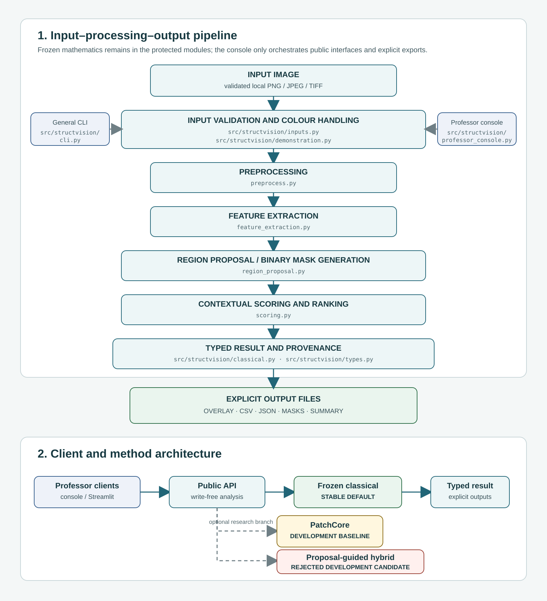

StructVision-AI professor console architecture
Offline engineering handoff diagram. The live route uses the stable frozen classical baseline and creates explicit review artifacts.

Interpretation: outputs are ranked review proposals, not confirmed defects, calibrated confidence, or engineering diagnosis. PatchCore is development-only; the hybrid remains rejected.